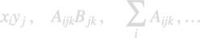

tensor
The nanobem toolbox has a relatively simple internal tensor class for the manipulation of multidimensional arrays of the form

The tensor class does not use Einstein's sum convention. Tensor objects should be used when computer time is not a central issue, otherwise a more explicit implementation using the internal Matlab operations and functions is preferable.
Contents
Initialization
% dummy indices for internal tensor class [ i, j, k ] = deal( 1, 2, 3 ); % allocate array for internal tensor class a = zeros( 3, 5, 4 ); % initialize tensor a = tensor( a, [ i, j, k ] );
For the dummy indices it is important to use unique identifiers. Once the tensors are initialized, they can be manipulated in a simple and intuitive fashion. Internally, the sizes of the tensors are not checked and it is assumed that the user declares them properly.
% define second tensor b = zeros( 5, 4 ); b = tensor( b, [ j, k ] ); % multiplication of tensors c = a * b
c =
tensor with properties:
val: [20�3 double] siz: [5 4 3] idx: [2 3 1]
% sum over index I c = sum( a * b, i ); % convert to numeric array c( j, k ) c = double( c, [ j, k ] );
Methods
% cross product along dimension K cross( a, b, k ); % dot product along dimension K, w/o complex conjugation dot( a, b, k ); % convert to numeric a( indices ) double( a, indices ); % add tensors a + b; % subtraction a - b; % unary minus - a; % division a ./ b; % power with scalar N a .^ n; % summation along dimension K sum( a, k );
Copyright 2022 Ulrich Hohenester